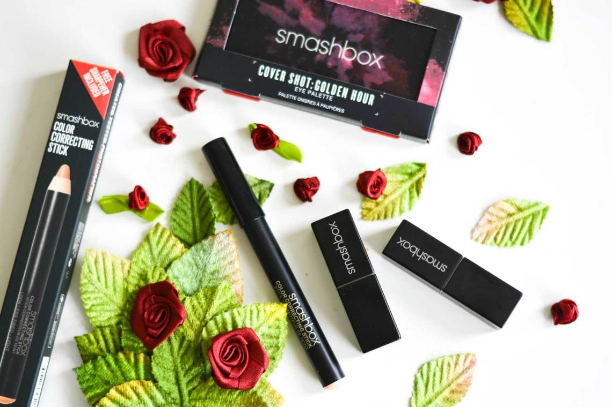

NEW SMASHBOX GOODIES: COVER SHOT, BE LEGENDARY & LOOK LESS TIRED
Er zijn zo van die make-up merken waarvan het lijkt alsof ze gewoon geen slechte producten kunnen uitbrengen. Eén van die merken is ongetwijfeld Smashbox, met hun eindeloze verzameling van producten met mooie verpakkingen, leuke concepten en uitstekende kwaliteit. Ik heb nog niet heel veel ervaring met het merk, maar ik heb er al zoveel over gelezen. Vandaag toon ik je drie producten uit hun gamma: het Cover Shot oogschaduwpale e, twee Be Legendary lips cks en de Color Correc ng S ck Look Less Tired. Lees snel verder!
Ik reviewde een tijd geleden ook al de Smashbox Photo Finish Primer, een echt cultproduct als het op beauty aankomt. Ook deze newbies van Smashbox zien er alvast prachtig uit: er is waarlijk werk gestopt in de vormgeving van de producten. Bovendien zien ze er door de zwarte kleur erg professioneel uit, en dat is ook wat Smashbox wil uitstralen.
SMASHBOX COLOR CORRECTING STICK LOOK LESS TIRED
Smashbox Color Correcting Stick, €22,96Deze Color Correcting Stick is verkrijgbaar in vier kleuren, waarvan ik de kleur Less Tired uitprobeer. Deze stick is bedoeld om het gebied onder je ogen op te frissen, waardoor je er minder vermoeid uitziet. In het doosje zit ook een slijper, zodat je hem regelmatig kan aanslijpen. Dat vind ik wel goed bedacht, want dat mis ik soms bij potloodproducten!
Ik test concealers altijd uit over mijn tattoo, want zo kan je goed zien hoe sterk ze dekken. Deze Color Correcting Stick dekt best goed, je ziet het zwart er maar een heel klein beetje doorheen. De kleur is wat naar de peachy kant, wat ervoor zorgt dat blauwe en paarse – aka onfrisse – verkleuringen worden opgelicht.
SMASHBOX COVER SHOT EYE PALETTE
Smashbox Cover Shot Eye Palette, €30,10Wauw, het Cover Shot Eye Palette is echt prachtig, en dat had ik al besloten bij het zien van het prachtige doosje. Als je het doosje heen en weer beweegt, lijkt het wel alsof er een led-schermpje opstaat en er een explosie plaatsvindt. Ik kan het niet goed uitleggen, maar het is echt prachtig!
En ook de inhoud van het palette is supermooi. De vier linkse kleurtjes zijn wat meer nude, en met de rechtse tinten kan je een wat opvallendere look maken. Deze variant van het Cover Shot palette heet Golden Hour. De naam past heel mooi bij de kleuren!
Ik maakte een subtiele look met de paarse tinten. Ik draag mijn groene kleurlenzen van Coloured Contacts, dus de paarse kleurtjes doen de groene kleur extra uitkomen.
Conclusie
Ik wist het: Smashbox stelt niet teleur. de Color Correcting Stick heeft een heerlijk romige textuur en smelt perfect samen met mijn huid, én geeft mijn blik een wakkere uitstraling. De Be Legendary Lipsticks zijn inderdaad legendarisch. Ze zijn supergoed gepigmenteerd, dekken perfect en de kleurtjes zijn supermooi! Ook het Cover Shot Eye Palette is een schot in de roos: het is compact en bevat alle kleurtjes die je nodig hebt voor een subtiele, maar ook meer intense look. Niks dan goeds, dus!